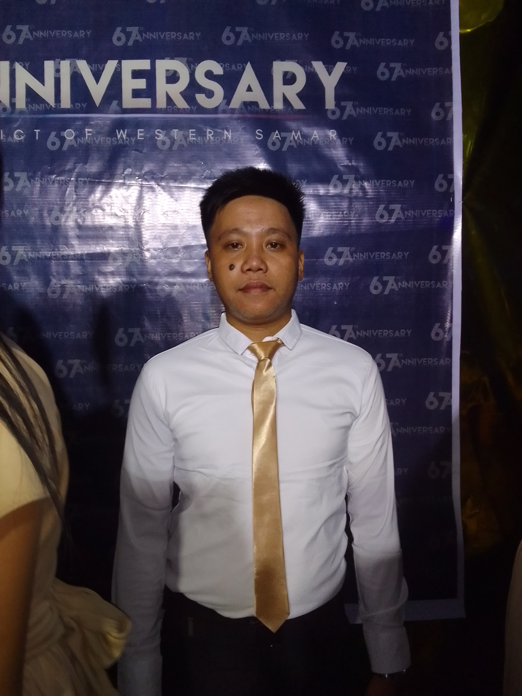

I am Mark Wilson S. Barandino 23 Years Old, A Bachelor of Science In Information System Student in Northwest Samar State University. Currently I live in Barangay Tarabucan, Oquendo II District, Calbayog City, Samar. I am The eldest child in our family and committed to serve god first above all and a Proud Member of Church Of Christ (INC/Iglesia Ni Cristo). Dedicated and hard working to fullfil my dreams and support my family needs and to bring better life in the future.
I had a lot of experience in many field because i work as SK Kagawad and Secretary for six consecutive years while i am studying. i work also in Valenzuela city during COVID-19 Pandemic in Water Station and also i work as a construction worker. In terms of paper works in various fields such as making Budgetary requirements for Barangay, Business Plan, Business Proposal, Layouting maps, Barangay Profile and etc.
My first accomplishment in life back when I was in catholic i was successfully achieved to gain profit for a cause to build a Barangay Church. i was also able to present as a representative in many campaign such as clean up drive and Giving gift for the street children's. My second accomplishment when i was in Senior High School and its give me opportunity to work in Valenzuela and for now i am continuing my study in college and thats another accomplishment to triumph.
"If you don't love the process, you won't love the result. If you put all your energy and focus just on the final results while ignoring the process, you will never walk away fulfilled because your happiness will only be based on the results and not the process. Practicing the process is not always glamorous, exciting or thrilling, but it will get you to where to want to be if you learn to embrace it."